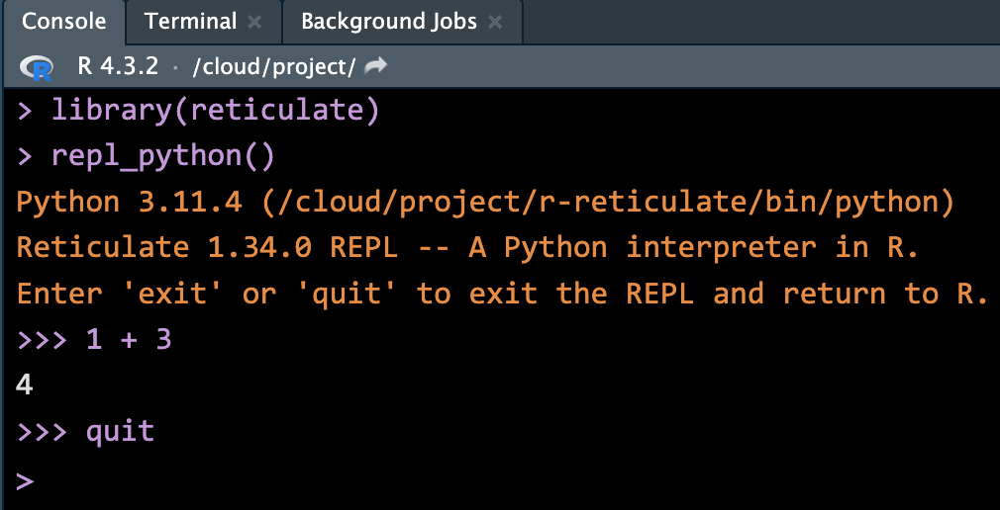

4 Prepare Yourself for data
This chapter is the Python version of the last chapter. We learn how to write and run Python code in Posit Cloud RStudio IDE.
4.1 Python in RStudio
Python Script
A Python script is a .py file that contains Python code. To create a Python script, go to File > New > Python Script, or click the green-plus icon on the topleft corner and select Python Script. Here I print the string Hello, World!", create an string object b storing Hello, World!", and then print the 3rd to 4th letter of the string.
Run Python Code
- Running Python code may require you to update some packages. Please say YES!

- When you run the Python code in the script, the console will switch from R to Python.
- Type
quitin the Python console to switch back to the R console.
To type and run Python code directly in the console, with RStudio we install the R package reticulate (see R package section below for more discussion). Once the reticulate is installed, we use the call library() to load it into into memory for direct use of it in our computing environment. Then the function call repl_python() will turn R console into Python console. The word “repl” means Read, Evaluate, Print, and Loop. We the type Python code after the prompt >>>, and run it by hitting Enter/return.
To return back to R console, just type quit or exitin the Python console, and hit Enter/return.

After we run the Python script from Figure 4.1, the following object is stored in the environment:
- Object
bstoring a stringHello World!

4.2 Basic Python
In this section, we learn some basic Python syntax by translating the R code in the previous chapter. While their output may be a little different, the R and Python code will provide exactly the same result.
4.2.1 Python Packages üì¶
Same as R, there are many Python packages/libraries out there. Most popular python packages by their purposes include:
Data visualization: matplotlib, seaborn
Machine Learning: scikit-learn
Statistics: statsmodels
Without those packages, Python cannot or at least very hard to do statistical and data analysis. Again, Python is a general purpose language, but R is built for statistics. R has many built-in functionalities specifically for statistics and data management. But with those packages, Python can also do fancy statistics and data science.
To install a Python package in Posit cloud, in your RStudio project, run
library(reticulate)
virtualenv_create("myenv")Then go to Tools > Global Options > Python > Select > Virtual Environments
You may need to restart R session. Do it, and in the new R session, run the following to install NumPy, pandas, and matplotlib packages.
library(reticulate)
py_install(c("numpy", "pandas", "matplotlib"))Run the following Python code, and make sure everything goes well.
import numpy as np
import pandas as pd
v1 = np.array([3, 8])
v1
df = pd.DataFrame({"col": ['red', 'blue', 'green']})
df4.2.2 Operators
Python and R have very similar arithmetic and logical operator syntax.
## Arithmetic Example
2 + 3 * 5 + 4
# 21
2 + 3 * (5 + 4)
# 29## Logical Example
5 <= 5
# True
5 <= 4
# False
5 != 5 # Is 5 NOT equal to 5?
# FalseTo negate key words True or False in Python, we add not in front of them. Also, instead of using & and |, we use and and or to comparisons.
## Boolean Operations
True != False # Is TRUE not equal to FALSE?
# True
not True == False # Is not TRUE equal to FALSE?
# True
True or False # TRUE if either one is TRUE or both are TRUE
# TrueTo use mathematical functions in Python, we need to import the math module. Then to call any function in this module, we first type the module name followed by dot, and then the function name. Such syntax is general for using methods in a Python module or library, like libraryname.functionname().
## Built-in Functions
import math
math.sqrt(144)
# 12.0
math.exp(1) # Euler's number
# 2.718281828459045
math.sin(math.pi / 2)
# 1.0
abs(-7)
# 7
math.factorial(5)
# 120
math.log(100) # Natural log with base e
# 4.605170185988092
math.log(100, 10) # Log function with specified base 10
# 2.0In Python, we use = to do assignment.
## Assignment
x = 5
x
# 5
## Variable Operations
x = x + 6
x
# 11
x == 5
# False
math.log(x)
# 2.3978952727983707As shown in Basic R, the following code is an example of BAD naming! Never do this!
## Bad Naming (Avoid Doing This in Practice)
math.pi = 20 # This is bad coding, avoid overwriting built-in names
abs
# <built-in function abs>
abs = abs(math.pi)
abs4.2.3 Object types
To check object type, we also use type(). Note that in Python 5 itself is an integer with no decimal places. 5.0 instead is of type float corresponding to type double in R. We can turn a float into an integer using int(). The character type in R is the type str short for string in Python.
## Type Checking
type(5)
# <class 'int'>
type(5.0)
# <class 'float'>
type(int(5.0))
# <class 'int'>
type("I_love_stats!")
# <class 'str'>The logical type in R is the type bool short for boolean in Python.
## Boolean Type
type(1 > 3)
# <class 'bool'>
print(isinstance(5, int))
# TrueWe can use isinstance() function to check whether or not the specified object is of the specified type.
isinstance(5, float)
# False
isinstance(5.0, int)
# False4.2.4 Python data structures
Python has built-in data structures including lists, tuples, dictionaries, and sets. However, they are not specifically for statistics and data science. We usually use “array” in the library NumPy and “DataFrames” in pandas for statistical analysis. There is no exactly one-to-one correspondence of R and Python data structures. Below I show you one Python version of R data structures. We can definitely use other Python structures to represent the same thing in R.
Vector (One-dimensioanl Array of NumPy)
Python has numbers and strings, but no built-in vector structure. To create a sequence type of structure, we can use a list that can save several elements in an single object. To create a list in Python, we use []. For details about Python lists, please check Appendix B.
Here we use one dimensional array structure in NumPy to represent a vector. First we import and give NumPy a shorter name np.
import numpy as npThen to create a one dimensional array, we call the function array(), with a list of objects inside.
## Vector Creation
dbl_vec = np.array([1, 2.5, 4.5])
dbl_vec
# array([1. , 2.5, 4.5])
int_vec = np.array([1, 6, 10])
int_vec
# array([ 1, 6, 10])
log_vec = np.array([True, False, False])
log_vec
# array([ True, False, False])
chr_vec = np.array(["pretty", "girl"])
chr_vec
# array(['pretty', 'girl'], dtype='<U6')The function len() is used to check the number of elements in the array, and the method .dtype short for data type, can be used to check an NumPY object’s type or specify or convert data type. Note that when we write dbl_vec.dtype, it in fact gives us the data type of the first element of the array. It is a 64-bit floating-point number, where 64-bit is its size saved in the memory.
## Vector Properties
len(dbl_vec) # Length of the vector
# 3
dbl_vec.dtype # Type of elements in the vector
# dtype('float64')chr_vec[0].dtype
# dtype('<U6')
chr_vec[1].dtype
# dtype('<U4')Operations on Vectors (1D Array)
Same as R, Python array operations happen element-wisely.
## Vector Arithmetic
v1 = np.array([3, 8])
v2 = np.array([4, 100])
# %%
# Vector addition
v1 + v2
# array([ 7, 108])
# Vector subtraction
v1 - v2
# array([ -1, -92])# Vector multiplication and division
v1 * v2
# array([ 12, 800])
v1 / v2
# array([0.75, 0.08])
np.sqrt(v2)
# array([ 2., 10.])Recycling of Vectors (1D Array)
Unlike R, Python Numpy array does not support vector recycling unless scalar operations.
## Recycling in Vector Arithmetic
v1 = np.array([3, 8, 4, 5])
v1 * 2 # Element-wise multiplication
# array([ 6, 16, 8, 10])
v1 * np.array([2, 2, 2, 2]) # Equivalent to above
# array([ 6, 16, 8, 10])
v3 = np.array([4, 11])
# Use np.resize to automatically resize v3 to match v1's length
v1.shape
# (4,)
v3_resized = np.resize(v3, v1.shape)
v3_resized
# array([ 4, 11, 4, 11])
v1 + v3_resized
# array([ 7, 19, 8, 16])If we do v1 + v3, Python will render an error message below saying that the two vectors are not of the same size.
# Traceback (most recent call last):
# File "<string>", line 1, in <module>
# ValueError: operands could not be broadcast together with shapes (4,) (2,)So in Python, we need to do recycling manually. We can first resize (.resize) the vector v3 so that is has the same size (.shape) as v1.
Subsetting Vectors (1D Array)
Always keep in mind that the indexing of Python starts with 0!!! So we grab the first element with indexing [0], and in general the kth element with [k-1]. If we want to keep multiple elements, we can use a Python list by a pair of square brackets []. So v1[[0, 2]] keeps the first and third element of v1. In Python, we can use np.delete method to remove elements.
Warning
In Python array, we cannot use v1[[-1, -2]] or v1[-[1, 2]] to remove the second and third element.
v1[[-1, -2]] actually returns the last element of v1 followed by the second last. The negative indexing works in Python, and it means indexing from the last.
v1[[-1, -2]]
# array([5, 4])v1[-[1, 2]] instead will render an error. There is no such index rule by adding a negative sign in front of a list.
## Subsetting
v1
# array([3, 8, 4, 5])
v2
# array([ 4, 100])
v1[0] # First element
# 3
v2[1] # Second element
# 100# %%
v1[[0, 2]] # Corresponds to v1[c(1, 3)] in R
# array([3, 4])
np.delete(v1, [1, 2]) # Corresponds to v1[-c(2, 3)] in R
# array([3, 5])Factor (pd.Categorical())
There is no default data structure type factor in Python. One similar to factor in Python is the Categorical vector in pandas package. We first import the package into our working session, and call it pd.
We can create a pandas categorical vector, we use pd.Categorical(), and inside the call, we provide a list-like object.
# Factor equivalent in Python using pandas
fac = pd.Categorical(["med", "high", "low"])
fac
# ['med', 'high', 'low']
# Categories (3, object): ['high', 'low', 'med']
type(fac)
# <class 'pandas.core.arrays.categorical.Categorical'>fac.categories can check the categories or levels, and fac.codes shows how those levels are coded in numbers. You see that by default they are ordered by the length of objects first and then alphabetically. low and med with 3 characters are shorter than high, and “l” comes earlier than m. Therefore we have low = 1, med = 2, and high = 3.
fac.categories
# Index(['high', 'low', 'med'], dtype='object')
fac.codes
# array([2, 0, 1], dtype=int8)We can create an ordered categorical vector by adding ordered=True. The order will follow the specification in the argument categories. Notice that now we have ['low' < 'med' < 'high'].
order_fac = pd.Categorical(["med", "high", "low"], categories=["low", "med", "high"], ordered=True)
order_fac
# ['med', 'high', 'low']
# Categories (3, object): ['low' < 'med' < 'high']
order_fac.codes
# array([1, 2, 0], dtype=int8)List
Python has it own built-in list structure. Unlike R list, Python lists cannot have named elements. To create a Python built-in list, we use []. Check Appendix B for more details.
# Creating and accessing lists
x_lst = [[1, 2, 3], "a", [True, False]]
x_lst
# [[1, 2, 3], 'a', [True, False]]type(x_lst)
# <class 'list'>
len(x_lst)
# 3Extracting a single element of a Python list is straightforward. Just put the index in the square bracket.
# Subsetting list elements
x_lst[0]
# [1, 2, 3]
type(x_lst[0])
# <class 'list'>If we would like to extract multiple elements in a Python list, we need to use a slice operator that is represented by colons. It takes at least two arguments: starting index and ending index. The starting index is called inclusive, and the ending index is called exclusive. For example lst[2:4] means we grab the third element and the fourth element of a list lst.
By default, it creates a sequence of indices with increment 1. We can add one more colon followed by the specified gap of the indices. For example 2:8:2 will create a sequence of indices (2, 4, 6). Not that 8 is excluded. The followings show some examples.
x_lst[0:2:1]
# [[1, 2, 3], 'a']
x_lst[0:2]
# [[1, 2, 3], 'a']
x_lst[0:3:2]
# [[1, 2, 3], [True, False]]Matrix (2-dimensional numpy array)
The matrix structure is in fact a 2-dimensional array which can be created by the numpy package.
To create a 2D array, we create a list of list in np.array(). The first list element is the the first row of the resulting matrix, and the second list element is the the second row of the resulting matrix, and so on. By default, Python will fill in elements row by row.
mat = np.array([[1, 4], [2, 5], [3, 6]])
mat
# array([[1, 4],
# [2, 5],
# [3, 6]])We could also create a list of numbers, then use .reshape method to decide the dimension of the matrix, and how the numbers in the list are filled in the matrix. The argument order = "F" means we’d like to fill elements by columns.
mat = np.array([1, 2, 3, 4, 5, 6]).reshape((3, 2), order = "F")
mat
# array([[1, 4],
# [2, 5],
# [3, 6]])mat.shape # Dimension
# (3, 2)
mat.shape[0] # Number of rows
# 3
mat.shape[1] # Number of columns
# 2Subsetting a Matrix
Subsetting a matrix in Python is similar to that in R. We have two sets of indices for row and column respectively that are separated by comma. However, in Python, if we keep all rows or all columns, we need to add colon : in the row index or column index. Also, remember that indexing in Python starts with 0.
mat[:, 1] # Second column
# array([4, 5, 6])
mat[1, :] # Second row and all columns
# array([2, 5])mat[[0, 2], :] # First and third rows
# array([[1, 4],
# [3, 6]])Stacking Matrices
To combine two matrices, we use np.hstack() and np.vstack(). np.hstack() is similar to cbind() in R that stacks arrays in sequence horizontally (column wise). Instead, np.vstack() is similar to rbind()` in R that stacks arrays in sequence vertically (row wise)
# Column binding (cbind in R)
print(mat)
# [[1 4]
# [2 5]
# [3 6]]
mat_c = np.array([7, 0, 0, 8, 2, 6]).reshape((3, 2), order='F')
print(np.hstack((mat, mat_c))) # Should have the same number of rows
# [[1 4 7 8]
# [2 5 0 2]
# [3 6 0 6]]# Row binding (rbind in R)
print(mat)
# [[1 4]
# [2 5]
# [3 6]]
mat_r = np.array([1, 2, 3, 4]).reshape((2, 2), order='F')
print(np.vstack((mat, mat_r))) # Should have the same number of columns
# [[1 4]
# [2 5]
# [3 6]
# [1 3]
# [2 4]]Data Frame
Python has no built-in data frame structure, and the numpy package does not supply it too. The data frame can be created using the pandas package using the command pd.DataFrame() once we import pandas as pd.
import pandas as pdInside pd.DataFrame(), we need to provide a sequence of named objects, where names are column names or variable names of the data frame. To provide such, we can use a Python built-in dictionary that is generated by {} with the key-value structure as key:value. The keys in the dictionary will work as the column names of the resulting data frame. For more details about Python dictionaries, please check Appendix B.
# Creating a DataFrame
df = pd.DataFrame({"age": [19, 21, 40], "gender": ["m", "f", "m"]})
df
# age gender
# 0 19 m
# 1 21 f
# 2 40 mWe can check summary of the data frame using the .info() method.
# DataFrame structure
df.info()
# <class 'pandas.core.frame.DataFrame'>
# RangeIndex: 3 entries, 0 to 2
# Data columns (total 2 columns):
# # Column Non-Null Count Dtype
# --- ------ -------------- -----
# 0 age 3 non-null int64
# 1 gender 3 non-null object
# dtypes: int64(1), object(1)
# memory usage: 180.0+ bytesProperties of Data Frames
# Accessing DataFrame properties
df.columns # Names of columns
# Index(['age', 'gender'], dtype='object')
len(df) # Number of observations
# 3
df.shape[1] # Number of columns
# 2
df.shape # Dimensions
# (3, 2)
type(df) # Type of df
# <class 'pandas.core.frame.DataFrame'>
df.__class__.__name__ # Class of df
# 'DataFrame'To combine two data frames, we can use pd.concat() command. Notice the difference between the case with and without ignore_index=True. If True, the resulting axis will be labeled \(0, . . ., n - 1\). This is useful if you are concatenating objects where the concatenation axis does not have meaningful indexing information.
# Row binding with DataFrames
df_r = pd.DataFrame({"age": [10], "gender": ["f"]})
pd.concat([df, df_r], ignore_index=True)
# age gender
# 0 19 m
# 1 21 f
# 2 40 m
# 3 10 f
pd.concat([df, df_r])
# age gender
# 0 19 m
# 1 21 f
# 2 40 m
# 0 10 fBy default, pd.concat() combines two data frames by rows (axis=0). If we like to combine data frames by columns, we add axis=1 in the function.
# Column binding with DataFrames
df_c = pd.DataFrame({"col": ["red", "blue", "gray"]})
df_new = pd.concat([df, df_c], axis=1)
df_new
# age gender col
# 0 19 m red
# 1 21 f blue
# 2 40 m graySubsetting a Data Frame
To access a group of rows and columns of a data frame, we can use .loc() or iloc(). loc is short for location, and i stands for index. In the examples, we use iloc() with index [0, 2] to grab the first and the third row. We use .loc() to get the ‘age’ column by its name, which can also be got using df_new["age"]. We can put a selection condition in the brackets similar to what we do in R.
# Subsetting rows
df_new.iloc[[0, 2], :] # Subset rows
# age gender col
# 0 19 m red
# 2 40 m gray
df_new.loc[:, 'age']
# 0 19
# 1 21
# 2 40
# Name: age, dtype: int64
df_new["age"]
# 0 19
# 1 21
# 2 40
# Name: age, dtype: int64
df_new[df_new["age"] == 21] # Select row where age == 21
# age gender col
# 1 21 f blueLook carefully the difference between one and two brackets subsetting. With one bracket, the data frame becomes a one dimensional pandas Series which is similar to 1D numpy array, and can work as a vector. When two brackets are used for subsetting, the data frame structure is kept. The two outputs are printed differently too.
# Subsetting columns
df_new["age"] # become a pd Series
# 0 19
# 1 21
# 2 40
# Name: age, dtype: int64
type(df_new["age"])
# <class 'pandas.core.series.Series'>
df_new[["age"]] # Still a pd DataFrame
# age
# 0 19
# 1 21
# 2 40
type(df_new[["age"]])
# <class 'pandas.core.frame.DataFrame'>df_new[["age", "gender"]] # Multiple columns like a matrix
# age gender
# 0 19 m
# 1 21 f
# 2 40 m
df_new.loc[:, ["age", "gender"]] # Equivalent to matrix-like subsetting
# age gender
# 0 19 m
# 1 21 f
# 2 40 m4.3 Exercises
- Vector
The code above shows a Marquette student poker and roulette winnings from Monday to Friday. Copy and paste them into your Python session and complete problem 1.
- Assign to the variable
total_dailyhow much you won or lost on each day in total (poker and roulette combined). - Calculate the winnings overall
total_week. Print it out.
# ==============================================================================
## Factor
# ==============================================================================
# Create speed_vector
speed_vec = pd.Categorical(["medium", "low", "low", "medium", "high"])- Factor
-
speed_vecabove should be converted to an ordinal factor since its categories have a natural ordering. Create an ordered factor vectorspeed_facby completing the code below.
# Create speed_vector
___________ = pd.Categorical(______, categories=___________, ordered=______)# ==============================================================================
## Data frame
# ==============================================================================
# Defining vectors for planets
name = ["Mercury", "Venus", "Earth", "Mars", "Jupiter", "Saturn", "Uranus", "Neptune"]
planet_type = ["Terrestrial planet", "Terrestrial planet", "Terrestrial planet",
"Terrestrial planet", "Gas giant", "Gas giant",
"Gas giant", "Gas giant"]
diameter = [0.375, 0.947, 1, 0.537, 11.219, 9.349, 4.018, 3.843]
rotation = [57.63, -242.03, 1, 1.05, 0.42, 0.44, -0.73, 0.65]
rings = [False, False, False, False, True, True, True, True]- Data Frame
Data frames have properties of lists and matrices, so we skip lists and matrices and focus on data frames. You want to construct a data frame that describes the main characteristics of eight planets in our solar system. You feel confident enough to create the necessary vectors: name, planet_type, diameter, rotation and rings that have already been coded up as above. The first element in each of these vectors corresponds to the first observation.
- Use the function
pd.DataFrame()to construct a data frame. Pass the vectorsname,planet_type,diameter,rotationandringsas arguments in this order. Call the resulting data frameplanets_df.
_________ = pd.___________({____:_____, ____:_____, ____:_____, ____:_____, ____:_____})- From
planets_df, select the diameter of Mercury: this is the value at the first row and the third column. Simply print out the result. - From
planets_df, select all data on Mars (the fourth row). Simply print out the result. - Select and print out the first 5 values in the
diametercolumn ofplanets_df.